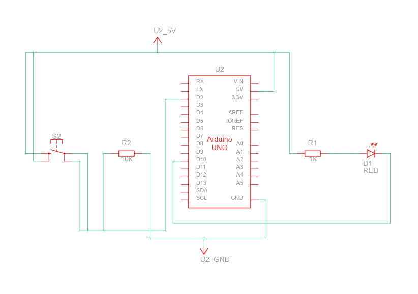
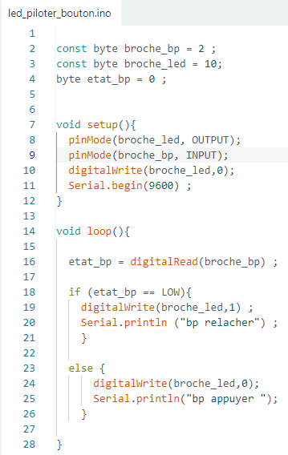

Réaliser un prototype pour des solutions matérielles ou logicielles
Description de la compétence
Réaliser un prototype, c'est passer du schéma à la version qui fonctionne — que ce soit un montage électronique, un programme, ou les deux. Cette compétence est mobilisée dès qu'on traduit une analyse en quelque chose de testable.
Mise en œuvre dans mes projets
Prototype de commande moteur sous Proteus
J'ai réalisé sous Proteus le schéma complet de la carte commande moteur, en plaçant chaque composant (BC337, BDX33, 1N4007, 1N4148, relais 8 V, résistances de base, connecteurs) et en câblant les signaux de commande (PWM1, PWM2, SENS_MOTEUR_1, SENS_MOTEUR_2). La simulation a permis de valider le principe avant d'envisager un prototypage matériel.
Prototype Arduino bouton + LED
J'ai écrit et testé sous Arduino un programme de pilotage d'une LED par bouton poussoir : déclaration de constantes broche_bp et broche_led, configuration des broches dans setup(), lecture du bouton par digitalRead() et action sur la LED par digitalWrite() dans loop(). Un compteur d'appuis a été ajouté avec retour sur la liaison série à 9600 bauds.
Prototype C++ du simulateur balistique
J'ai développé seul l'ensemble du code C++ (sous Code::Blocks) du simulateur d'interception : architecture modulaire avec main.cpp, balistique.cpp/h, utilitaires.cpp/h, et un fichier de tests test_balistique.cpp. Le programme demande à l'utilisateur les paramètres des deux projectiles, résout une équation du second degré et affiche l'angle de tir de l'intercepteur.
Décodeur 7 segments sous Quartus (FPGA)
En TP d'automatisme, j'ai conçu sous Quartus un décodeur 7 segments à l'aide de blocs .bdf (schémas) en réalisant chacun des sept segments (seg_a à seg_g) comme une fonction logique combinatoire indépendante.
Preuves associées


Auto-évaluation
Je me situe à un niveau de maîtrise satisfaisante (MS). Je sais réaliser des prototypes logiciels (C++, Arduino) qui fonctionnent, et des schémas électroniques sous Proteus. Je dois encore progresser sur le prototypage matériel réel (soudure, mise en boîtier), que je n'ai pas pratiqué de façon approfondie cette année.